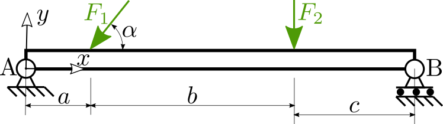
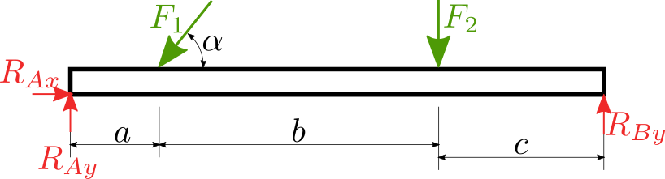
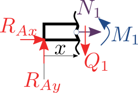
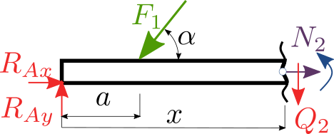
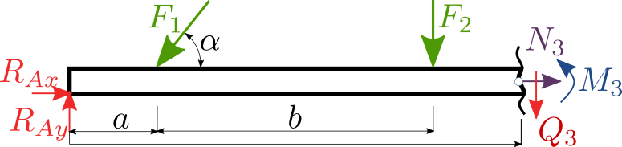

Vnitřní statické účinky - metoda řezu (☕☕)¶
Vnitřní statické účinky (VSU) jsou silové účinky v tělese. Budeme je studovat tak, že provedeme řez tělesem a vmístě řezu zavedeme odpovídající VSU podle obrázku.

podle počtu stupňů volnosit zavedeme posouvající sílu \(N\), která je popisuje podélnou sílu v tělese. Dále zavedeme tečnou sílu \(Q\), která popisuje střižnou sílu a nakonec ohybový moment \(M\). Kladný směr volíme libovolně(opět platí, že musíme dodržovat po celý výpočet), ale doporučeno je zavádět orinetaci podle obrázku.
Postup¶
Nejdříve analyzujeme zatížení nosníku a napíšeme vnější rovnice rovnováhy uvolněním nosníku a nahrazením uložení odpovídajícími reakcemi.
Řezy se provádějí v místech kde dochází ke změně, tj. působiště osamocené síly, uložení nebo spojitého zatížení (začátek, či konec), viz obrázek se třemi řezy.
Ke každému řezu napíšeme rovnice rovnováhy a určíme platnost řezu.
Příklad¶
Analyzujte průběh tahových/tlakových a střihových sil a ohybového momentu tenkého nosníku prostě podepřeného a zatíženého osamělými silami. Síla \(F_1=500\) N je pod sklonem \(\alpha=45°\), síla \(F_2=250\) N. Vzdálenosti jsou: \(a=0.2\) m, \(b=0.65\) m a \(c=0.4\) m.

Určete:
a) Průběhy \(N\), \(Q\) a \(M\) podél nosníku
b) Maximální a minimální hodnoty VSÚ
Řešení¶
Nejprve uvolníme nosník, zavedeme reakce a určíme PSV.

PSV = 0, protože máme 3 reakce a 3 rovnice rovnováhy (ve 2D), které jsou:
import sympy as sp
F1, F2, a, b, c, alpha = sp.symbols('F1 F2 a b c alpha')
RAx, RAy, RBy = sp.symbols('RAx RAy RBy')
eq1 = sp.Eq(RAx - F1*sp.cos(alpha), 0)
eq2 = sp.Eq(RAy + RBy - F2 - F1 * sp.sin(alpha), 0)
eq3 = sp.Eq(RBy * (a + b + c) - F2 * (a + b) - F1*sp.sin(alpha)*a, 0)
reseni = sp.solve([eq1, eq2, eq3], [RAx, RAy, RBy])
RAx = reseni[RAx]
RAy = reseni[RAy]
RBy = reseni[RBy]
RAx
RAy
RBy
Řez č.1: \(x\in <0, a>\)¶

N1, Q1, M1, x = sp.symbols('N1 Q1 M1 x')
eq4 = sp.Eq(N1 + RAx, 0)
eq5 = sp.Eq(-Q1 + RAy, 0)
eq6 = sp.Eq(M1 - x * RAy,0)
reseni = sp.solve([eq4, eq5, eq6], [N1, Q1, M1])
N1 = reseni[N1]
Q1 = reseni[Q1]
M1 = reseni[M1]
N1
Q1
M1
Řez č.2: \(x\in <a, a+b>\)¶

N2, Q2, M2 = sp.symbols('N2 Q2 M2')
eq7 = sp.Eq(N2 + RAx - F1 * sp.cos(alpha), 0)
eq8 = sp.Eq(RAy - Q2 -F1 * sp.sin(alpha), 0)
eq9 = sp.Eq(M2 - x * RAy + (x - a) * F1 * sp.sin(alpha),0)
reseni = sp.solve([eq7, eq8, eq9], [N2, Q2, M2])
N2 = reseni[N2]
Q2 = reseni[Q2]
M2 = reseni[M2]
N2
Q2
M2
Řez č.3: \(x\in <a+b, a+b+c>\)¶

N3, Q3, M3 = sp.symbols('N3 Q3 M3')
eq10 = sp.Eq(N3 + RAx - F1 * sp.cos(alpha), 0)
eq11 = sp.Eq(RAy - Q3 - F1 * sp.sin(alpha) - F2, 0)
eq12 = sp.Eq(M3 - x * RAy + (x - a) * F1 * sp.sin(alpha) + (x-a-b) * F2,0)
reseni = sp.solve([eq10, eq11, eq12], [N3, Q3, M3])
N3 = reseni[N3]
Q3 = reseni[Q3]
M3 = reseni[M3]
N3
Q3
M3
Analýza výsledků¶
# nahrajeme knihovnu na kresleni grafu a nastavime ji
import matplotlib.pylab as plt
plt.xkcd()
# nahrajeme numerickou knihovnu
import numpy as np
F1num = 500.
F2num = 250.
alphanum = sp.rad(45.)
anum, bnum, cnum = 0.2, 0.65, 0.4
Průběh posouvající síly \(N\)¶
# prevedeme symboliku na numeriku
N1num = sp.lambdify(x, N1.subs({F1:F1num, alpha:alphanum}))
N2num = sp.lambdify(x, N2)
N3num = sp.lambdify(x, N3)
# vytvorime vektor souradnice x pro kresleni
x1 = np.linspace(1e-16, anum, 100)
x2 = np.linspace(anum, anum + bnum, 100)
x3 = np.linspace(anum+bnum, anum+bnum+cnum, 100)
#nastavime velikost obrazku
plt.figure(figsize=(15, 5))
# kreslime
plt.fill_between(x1, N1num(x1) * x1/x1, label="N1", hatch="X")
plt.fill_between(x2, N2num(x2) * x2/x2, label="N2", hatch="X")
plt.fill_between(x3, N3num(x3) * x3/x3, label="N3", hatch="X")
#pojmenujeme osy
plt.xlabel("x")
plt.ylabel("N(x)")
#vykreslime legendu
plt.legend()
# posleme obrazek ven
plt.show()

Průběh tečné síly \(Q\)¶
Q1num = sp.lambdify(x, Q1.subs({F1:F1num, alpha:alphanum, F2:F2num, a:anum, b:bnum, c:cnum}))
Q2num = sp.lambdify(x, Q2.subs({F1:F1num, alpha:alphanum, F2:F2num, a:anum, b:bnum, c:cnum}))
Q3num = sp.lambdify(x, Q3.subs({F1:F1num, alpha:alphanum, F2:F2num, a:anum, b:bnum, c:cnum}))
x1 = np.linspace(1e-16, anum, 100)
x2 = np.linspace(anum, anum + bnum, 100)
x3 = np.linspace(anum+bnum, anum+bnum+cnum, 100)
plt.figure(figsize=(15, 5))
plt.fill_between(x1, Q1num(x1), label="Q1", hatch="X")
plt.fill_between(x2, Q2num(x2), label="Q2", hatch="X")
plt.fill_between(x3, Q3num(x3), label="Q3", hatch="X")
plt.xlabel("x")
plt.ylabel("Q(x)")
plt.legend()
plt.show()
Průběh ohybového momentu \(M\)¶
M1num = sp.lambdify(x, M1.subs({F1:F1num, alpha:alphanum, F2:F2num, a:anum, b:bnum, c:cnum}))
M2num = sp.lambdify(x, M2.subs({F1:F1num, alpha:alphanum, F2:F2num, a:anum, b:bnum, c:cnum}))
M3num = sp.lambdify(x, M3.subs({F1:F1num, alpha:alphanum, F2:F2num, a:anum, b:bnum, c:cnum}))
x1 = np.linspace(1e-16, anum, 100)
x2 = np.linspace(anum, anum + bnum, 100)
x3 = np.linspace(anum+bnum, anum+bnum+cnum, 100)
plt.figure(figsize=(15, 5))
plt.fill_between(x1, M1num(x1), label="M1", hatch="X")
plt.fill_between(x2, M2num(x2), label="M2", hatch="X")
plt.fill_between(x3, M3num(x3), label="M3", hatch="X")
plt.xlabel("x")
plt.ylabel("M(x)")
plt.legend()
plt.show()